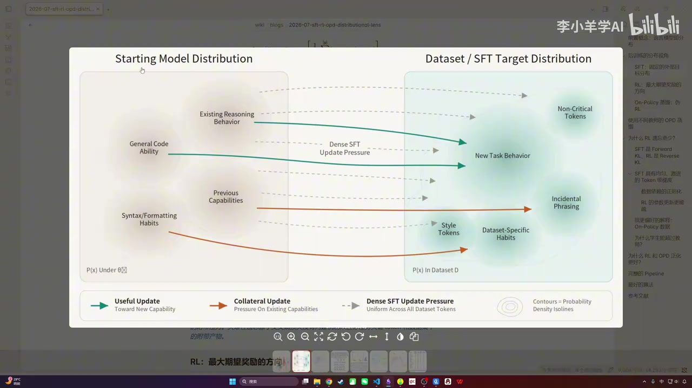
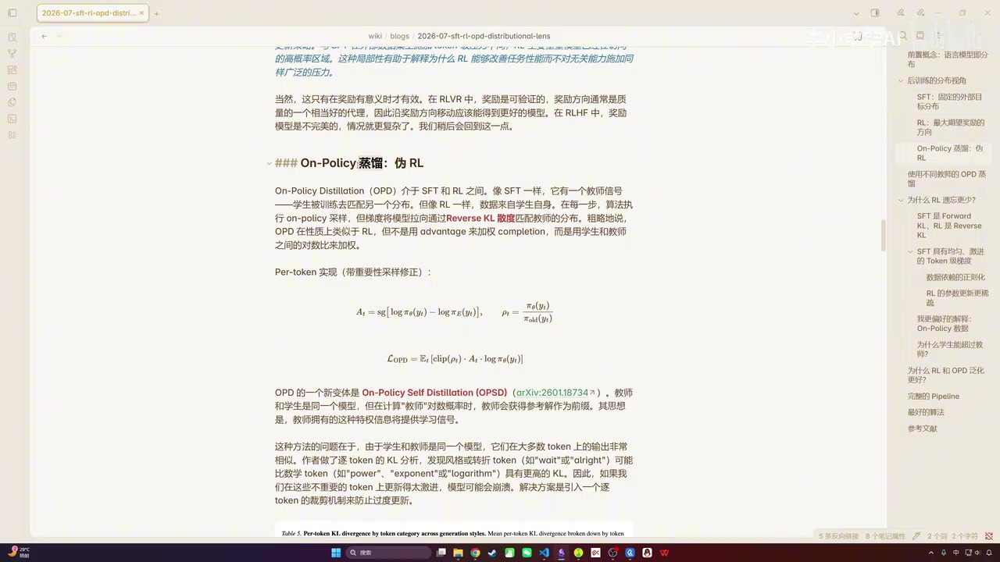
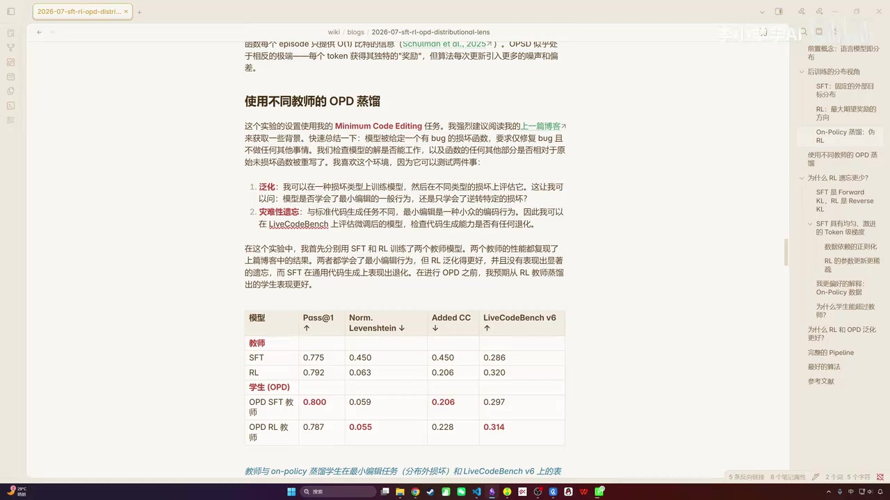
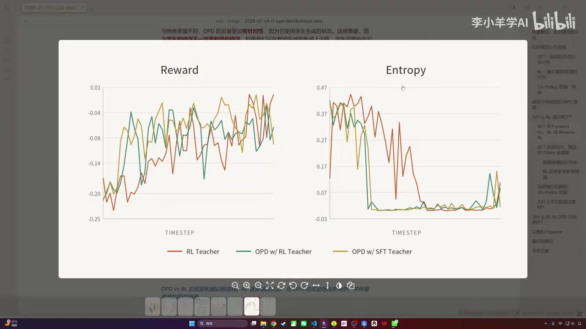

密集监督、训练稳定，适合冷启动和格式塑形；数据分布偏离模型越远，遗忘风险越高。
01
Executive summary
核心结论：差异首先在“训练轨迹从哪里来”
SFT 用外部示范把模型直接拉向目标数据分布；RL 让模型从自身分布采样，再按结果奖励做局部修正；OPD 则让学生自己采样、教师逐 token 指导。视频认为，后两者泛化更好、遗忘更少的关键，是 on-policy 数据而不只是 KL 方向。
在自身会访问的状态上学习，行为迁移更平滑；代价是奖励稀疏、信用分配粗。
兼具 on-policy 与密集监督；但教师信号有偏，策略可能过快收敛甚至崩溃。
02
Distributional lens
语言模型是序列上的条件分布
00:02:15模型逐 token 生成回答，完整序列的概率由每个位置的条件概率连乘得到。后训练可以理解为重塑这张概率地形：不同方法选择不同目标、不同采样区域，也对原有能力施加不同压力。
Σ
这是定性思维模型
分布图帮助理解数据来源、更新范围与灾难性遗忘，但不等同于严格的理论证明。

03
Method comparison
SFT、RL 与 OPD 的信号结构
- 轨迹
- 人工或强模型固定数据
- 信号
- 逐 token 交叉熵
- 优点
- 密集、稳定、启动快
- 风险
- 硬迁移与未见状态误差
适合冷启动、格式重塑与默认行为注入。
- 轨迹
- 当前策略自己生成
- 信号
- 结果奖励与优势
- 优点
- 贴近部署状态、较少遗忘
- 风险
- 稀疏奖励、粗信用分配
适合结果可校验、需要探索的任务。
- 轨迹
- 学生当前策略生成
- 信号
- 教师逐 token 反向 KL
- 优点
- on-policy + 密集监督
- 风险
- 教师偏差、噪声、熵坍缩
适合把教师能力迁到学生真实状态。


!
OPSD 变体
学生和教师可为同一模型；教师在额外看到参考答案的条件下，对学生轨迹提供 token 级信号。该设定仍可能受教师逐 token 判断噪声影响。
04
Observed result
“差老师”也可能教出更好的学生
00:17:48视频介绍一个 Minimum Code Editing 实验：SFT 教师在任务内提升但通用代码能力下降，RL 教师更好地保留了通用能力；然而用两者做 OPD 教师后，学生表现相近，部分指标上 SFT 教师对应的学生更好。
| 模型 / 角色 | Pass@1 ↑ | Norm. Levenshtein ↓ | Added CC ↓ | LiveCodeBench v6 ↑ |
|---|---|---|---|---|
| SFT 教师 | 0.775 | 0.450 | 0.450 | 0.286 |
| RL 教师 | 0.792 | 0.063 | 0.206 | 0.320 |
| OPD · SFT 教师 | 0.800 | 0.059 | 0.206 | 0.297 |
| OPD · RL 教师 | 0.787 | 0.055 | 0.228 | 0.314 |
数字来自视频展示的实验表。指标定义与实验细节未完整展开，不宜外推为普遍规律。


05
Why on-policy · Practice
On-policy 泛化机制与实践路线
00:21:15视频并不满足于“前向 KL 对反向 KL”的解释，因为许多现代 RL 训练即使去掉 KL 惩罚，仍能较好地抵抗遗忘。更偏好的解释是：RL 与 OPD 都从学生自己生成的轨迹出发，只在当前行为附近选择和修正。
01学生采样进入自己真实会到达的状态
02暴露错误训练分布包含自身偏差
03奖励或教师反馈在相关状态上提供方向
04局部更新逐步移动而非硬跳目标分布
更新集中在模型自己的高概率行为附近，较少无差别重写原能力。
训练中已见过自身错误引发的状态，不完全依赖完美教师轨迹。
奖励错误、探索不足或教师偏差仍会把局部更新引向坏区域。
推荐的组合路线与未解问题
PRETRAIN基础模型建立广泛语言与知识分布
SFT冷启动注入格式、任务与基本习惯
RL多个专家在可验证任务上在线优化
OPD能力汇聚把专家信号蒸馏到统一模型
方法各自留下的缺口
SFT：分布硬迁移
需要更好地控制数据距离与既有能力保持。
RL：奖励过于稀疏
需要可靠、细粒度的长程信用分配。
OPD：密集但有偏
需要校准教师噪声并防止熵过快坍缩。
未来方向
保持 on-policy，同时获得准确的 token 级反馈。
→
一句话 takeaway
“纸上得来终觉浅，绝知此事要躬行”：外部示范能把模型带到起点，真正稳健的能力更依赖模型在自己的状态分布中行动、反馈与修正。
i
阅读边界
页面呈现的是讲者对相关方法和实验的解释。结论应结合具体模型、数据与训练配置阅读，不宜脱离实验条件外推为普遍规律。